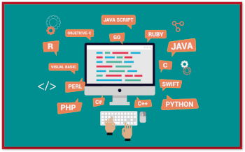

Front-end, Back-end ou Full Stack
Você sabe qual é a diferença dessas áreas?
Front-end
é uma área da programação que se dedica a criar a parte visual e interativa de um site, aplicativo ou software. É o que o usuário vê e usa quando acessa uma plataforma digital.
Linguagens mais famosas
Abaixo você verá algumas das linguagens mais citadas no mercado de trabalho, mas será que você sabe o seu significado e para que servem?
Confira abaixo:
- HTML
- HyperText Markup Language
- Linguagem de Marcação
- CSS
- Cascading Style Sheets
- Linguagem de Marcação
- JavaScript
- Python
Aqui você verá suas funcionalidades:
HTML
Linguagem de Marcação
Permite que um navegador leia e traduza marcações de textos e outras mídias para uma página na web, permitindo que o usuário possa visualizar e interagir com essa página. Isso inclui vídeos, formulários, áudio
CSS
Linguagem de Marcação
Define como os dados são apresentados no navegador. É um padrão que define como os dados são apresentados no navegador
JavaScript
Linguagem e Progamação
Permite a você implementar itens complexos em páginas web. É responsável também por toda a parte interativa qye o usuário pode ter com o sistema.
Python
Linguagem de Progamação
Corrigir e remover dados incorretos, o que é conhecido como limpeza de dados. Extrair e selecionar vários recursos de dados. Rotulagem de dados, que é a adição de nomes significativos aos dados.
Back-end
é um profissional especialista no desenvolvimento web. Ele tem a responsabilidade de planejar, programar, testar e manter a estrutura de códigos que faz a interface entre um site, o servidor e o banco de dados. Sua atuação é fundamental para garantir a eficiência e a segurança do sistema.
Full Stack
é um tipo de profissional ligado à área de TI capaz de trabalhar nas mais diversas atividades que dizem respeito ao desenvolvimento e programação web, muito valorizado no mercado graças ao seu conhecimento em diferentes linguagens, códigos e tecnologias.
Sálarios
Veja os sálarios desses profissionais:
- Desenvolvedor Front-end
- Dev Júnior
- de R$ 2.750,00 a R$ 4.350,00
- Dev Pleno
- de R$ 5.500,00 a R$ 7.500,00
- Dev Sênior
- Desenvolvedor Back-end
- Dev Júnior
- Dev Pleno
- Dev Sênior
- Desenvolvedor Full Stack
- Dev Júnior
- Dev Pleno
- Dev Sênior